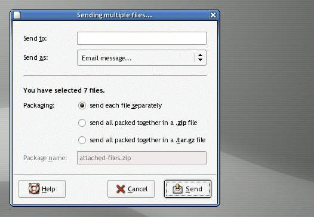
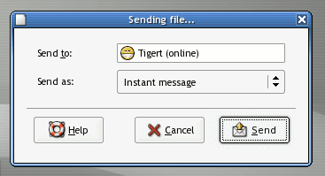

| Task Name | Bounty | |
|---|---|---|
| Improve Nautilus "Send to..." feature | $1982646862 | 300 |
| Drag and drop printing in Nautilus printers: view | $2090428571 | 0 |
The Nautilus file manager has a context menu item for "Send to...", which opens the Evolution composer to mail a selected file to someone. This task involves implementing three major improvements to this feature:

If the user has selected only one file and it is not a directory, then we can present him with a simpler dialog including only the recipient and the medium:

After the user clicks "Send" he gets either a IM "send file" dialog or a mail composer window with the file(s) attached.
To implement this feature nicely, you may want to integrate with file roller for the archive creation. And you should in some way indicate the total size of the compressed archive or file being sent to the user.
nautilus, evolution, gaim and file-roller. See our general note about gaim extension. Check the Nautilus mailing list, as well as Evolution Hackers, and visit the Gaim home page.